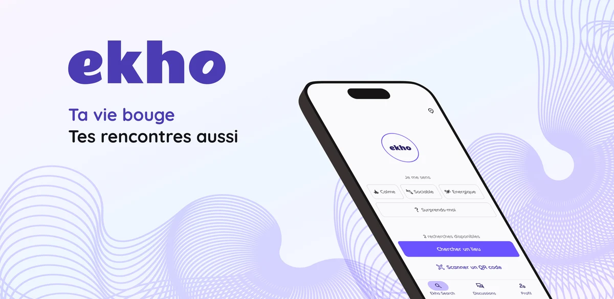
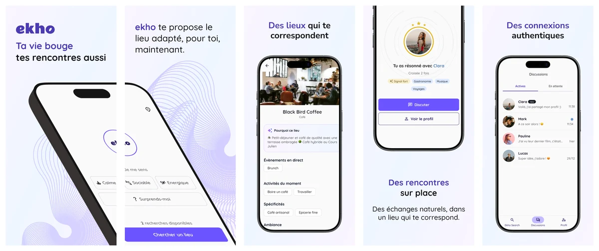

2025 - 2026 • 1 an
Du concept à l'app : charte, design system et MVP pour une nouvelle façon de se rencontrer
Application mobile de rencontres géolocalisées

Le défi
Ekho repense les rencontres : plutôt que de proposer des profils à swiper, l'app suggère un lieu adapté à ton humeur du moment — et les connexions se font sur place, entre personnes qui partagent le même état d'esprit et le même endroit au même instant.
Partir de zéro sur un concept inédit, avec une équipe de 3 développeurs et 1 commercial. Tout était à créer : l'identité de marque, les parcours utilisateurs, la logique du MVP. Et pour qu'un concept aussi nouveau fonctionne, l'expérience devait être immédiate — le bon lieu, en quelques secondes, adapté au moment.
Ma mission : porter toute la dimension design produit — de la charte graphique au design system, des diagrammes de flux à la roadmap MVP, jusqu'aux interfaces haute fidélité et à la QA produit.
Méthodologie
Poser l'identité
Une marque à créer de zéro
La première priorité : donner à Ekho une personnalité visuelle distincte, adaptée à un produit mobile grand public qui devait paraître à la fois moderne, chaleureux et immédiat. J'ai défini la charte graphique — couleurs, typographie, iconographie, tonalité — et construit le design system mobile sur cette base, pour que toutes les interfaces qui suivraient restent cohérentes quelle que soit la vitesse de livraison.
Structurer le MVP
Roadmap, flux et tickets : cadrer le MVP avec l'équipe
Avec le commercial, on a priorisé les fonctionnalités du MVP : quelles humeurs, quel matching lieu/utilisateur, quel parcours de mise en relation, dans quel ordre livrer. J'ai traduit ces décisions en diagrammes de flux et en tickets dev directement utilisables par l'équipe technique. Les réunions d'équipe avaient un ordre du jour structuré — pour avancer plutôt que clarifier les mêmes points en boucle.
Concevoir les parcours
Trois parcours à rendre évidents pour un concept inédit
Choisir son humeur et obtenir le bon lieu en quelques secondes. Comprendre pourquoi ce lieu correspond au moment. Découvrir une personne sur place et engager la conversation. Trois parcours que les utilisateurs devaient saisir sans apprentissage, pour un concept que personne ne connaissait encore — l'enjeu : rendre chaque interaction naturelle dès la première ouverture.
Accompagner la livraison
QA produit : vérifier que le concept reste lisible dans ses états réels
J'ai suivi chaque livraison avec l'équipe dev : vérification de la conformité aux maquettes, identification des écarts, retours sur les cas limites et les états vides. La QA était aussi l'occasion de valider que l'expérience restait lisible en conditions réelles — pas seulement dans les maquettes idéales.

L'application Ekho, disponible sur l'App Store et le Google Play Store.
Résultats
- Identité de marque créée de zéro (charte graphique, design system mobile)
- MVP spécifié et livré : roadmap, diagrammes de flux, tickets dev, réunions d'équipe
- Interfaces haute fidélité pour les 3 parcours clés (humeur → lieu, matching, messagerie)
- QA produit : suivi de conformité et retours à l'équipe dev tout au long de la livraison